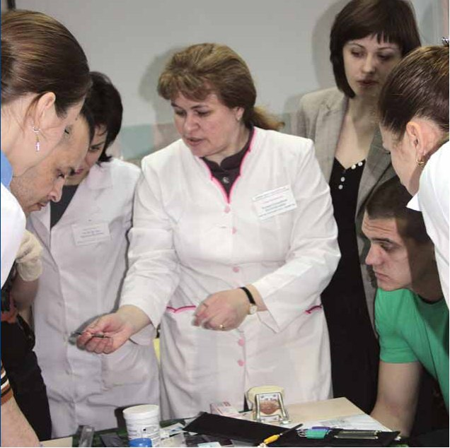
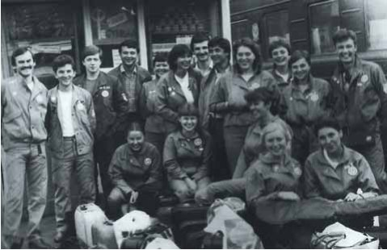
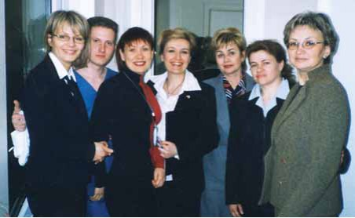
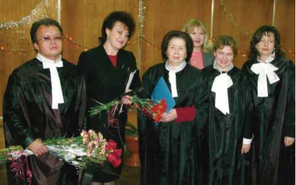
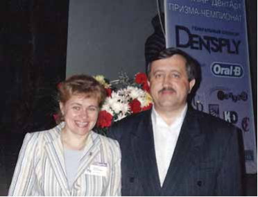
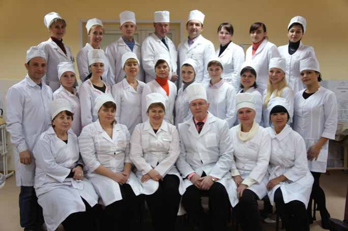

Вітальня · журнал «ДентАрт» 2014 №4 (77)
Професор Тетяна Петрушанко: «Інтегральний підхід у профілактиці захворювань пародонту зміцнює і загальний стан здоров’я людей»

У «Вітальні» журналу «ДентАрт», яка цього разу перебазувалася до фантомного класу Української медичної стоматологічної академії (м. Полтава), на читача чекає зустріч з професором Тетяною Олексіївною Петрушанко — доктором медичних наук, завідувачем кафедри терапевтичної стоматології УМСА, головою Полтавського відділення Асоціації лікарів-пародонтологів України.
«Ось вона, професія, де ти можеш допомагати людям»
Вона завжди знала, що стане лікарем. Ще п’ятирічною дівчинкою казала: «Буду лікувати діток, щоб вони ніколи не хворіли і не плакали». Тетянка знала, що буде лікарем. Тільки не стоматологом!
— Тетяно Олексіївно, чим було викликане таке упереджене ставлення до професії, яка невдовзі стане Вашою долею, Вашим полем успіху, Вашою великою любов’ю?
— Острах перед стоматологією був пов’язаний з першим моїм невдалим знайомством зі стоматологічним кабінетом. Я народилася у селі Жовтневому Решетилівського району на Полтавщині. На той час мій тато був командиром дивізіону військової частини, що базувалася побіля цього села, мама працювала педагогом початкової сільської школи. Я не ходила в дитячий садочок, бо до села було складно діставатися, але вже у два роки навчилася читати. Тож до школи мене віддали шестирічною. А через стадіон від школи — сільська лікарня, куди нас повели на профілактичний стоматологічний огляд. Мені, пам’ятаю, треба було полікувати нижнє ікло. Отож, я зовсім маленька на зріст, а наді мною в оточенні якихось страшних залізяк нахиляється лікарка, у халаті, мабуть, 60-го розміру. Вона вже взяла в руки наконечник для роботи, але її хтось покликав і вона вийшла. Я миттю вилетіла з кабінету і сказала собі: ніколи не буду стоматологом!
І в родині, і в школі всі знали, що я буду лікарем-педіатром. Коли друзі на мене шаржі малювали, то зображували Айболитом.
Після демобілізації батька ми переїхали у Полтаву, і мене віддали навчатися до спеціалізованої середньої школи №3 із поглибленим вивченням іноземних мов. Отримавши по завершенні навчання золоту медаль, вирішила, що свою мрію обов’язково буду намагатися здійснити! Їду до Києва, щоб здобути фах педіатра у столичному медінституті. Я відмінниця, позаду багато перемог на олімпіадах з фізики і з хімії, яка була профілюючим предметом на вступних іспитах. Прийшла у приймальну комісію, а мене там мокрим рядном відразу накрили: «Чого ви сюди приїхали? У вас же в Полтаві є медичний факультет у стоматологічному інституті». Кажу, що у Полтаві немає педіатричного, а у мене чітка мета — рятувати діток від хвороб. Вони дивляться на мене, як на дивачку якусь...
І ось перший профілюючий іспит з хімії. Дуже хвалили за відповіді — і поставили четвірку з плюсом. А мені треба було хоча б 5 з мінусом. Виходжу на вулицю — там багато батьків медалістів уже й з квітами очікують своїх дітей. Це мене так вразило, що я сказала своїм батькам: поїхали додому, приїду наступного року. Що це за іспити, коли хвалять-хвалять, а п’ятірки не ставлять?!
Повернулася в Полтаву. Але стрес, якого зазнала, таки позначився на стані зубів. За місяць довелося побувати у чотирьох лікарів. Це були фахівці різного рівня — і ті, кого називали зубниками, і справжні лікарі-стоматологи. У 16 років я тоді втратила один зуб через пульпіт, а вже тоді розуміла, що його можна було врятувати.
Поспілкувавшись з одним, другим, третім стоматологом, я раптом усвідомила: ось вона, професія, де можеш надати реальну допомогу людині, порятувати її від болю, подарувати їй красу!
І наступного року я вже в Київ не поїхала. Бо сказала собі прямо протилежне тому, що повторювала десяток літ. Тепер моя мета окреслювалася словами: «Так, я буду лікарем, але обов’язково — стоматологом! І якщо здобувати освіту, то лише там, де найкраще навчають обраній спеціальності». Таким вузом був для мене Полтавський медичний стоматологічний інститут, де рівень підготовки стоматологів був одним із найвищих у країні.

— А що робила така креативна особистість, як Тетяна Коп’як, той рік перед вступом до Полтавського медичного стоматологічного інституту?
— Пішла працювати на військовий завод учнем випробовувача приладів і деталей. Це було устаткування для військової промисловості та космічної галузі. Я дуже любила фізику, тому і така робота була для мене цікавою. Через п’ять місяців я вже мала третій, через рік — п’ятий розряд робітничої спеціальності. Робота була неодноманітна, цікава, вимагала творчого підходу. І, до речі, щомісячний заробіток мій був набагато вищим, ніж потім я мала як лікар.
— Жаль, що підприємства ВПК у Полтаві було знищено. Як би вони нам сьогодні стали у пригоді! Світ, на жаль, жорстокий і егоїстичний, і ми, українці, зі своїм ідеалом, який Шевченко висловив у «Псалмах Давидових» — «з братом добрим добро певне пізнать, не ділити» — розплачуємося за свою довірливість і беззахисність... Та повернімося до стоматології. Те, що Ви стали талановитим лікарем, сотні і сотні полтавців спізнали, як то кажуть, на своїх зубах. А як починався Ваш шлях у науку?
— На першому курсі мені так хотілося навчатися, що закінчила його без єдиної четвірки навіть поточної, і декан стоматологічного факультету Данило Єфремович Кіндій запропонував мені роботу у студентському науковому товаристві. Під його керівництвом я надалі розпочала займатися проблемами захворювань слизової оболонки ротової порожнини. Колектив викладачів кафедри терапевтичної стоматології був дуже сильний, учитися було у кого. Це і завідувач – шанований професор Павло Тихонович Максименко, і доценти Таїса Петрівна Скрипнікова, Галина Федорівна Просандєєва, Анатолій Олександрович Коздоба, і багато інших, які з радістю ділилися своїм професійним та життєвим досвідом із юною студенткою. Тому по закінченню інституту не було вагань – пішла вдосконалювати професійну майстерність стоматолога до клінічної ординатури саме на кафедру терапевтичної стоматології. Викладачі кафедри активно вели наукову роботу і мені запропонували допомогти в епідеміологічних дослідженнях. Ведучи стоматологічні обстеження студентів, аналізуючи отримані дані, почала активно співпрацювати з доцентом кафедри патологічної фізіології Лідією Мусіївною Тарасенко. На той час вона завершувала свою докторську дисертацію зі стресорного ушкодження тканин пародонту. Досвід спілкування з Лідією Мусіївною, її наукова школа експериментальних досліджень, ставлення до справжньої науки мені надзвичайно імпонували. Тому по завершенні клінічної ординатури сформувалося чітке бажання – продовжити навчання на кафедрі терапевтичної стоматології, але вже в очній аспірантурі. І запланована кандидатська дисертація «Адаптація тканин пародонту до стресорних впливів» виконувалася і захищалася одночасно по двох спеціальностях – стоматології та патологічній фізіології. У 1992 році у свій день народження я її успішно захистила.
Так поступово я інфікувалась профілактикою, набула ґрунтовних навиків обстеження і клінічного ведення пацієнтів, навчилася ставити експерименти на тваринах, досліджуючи стан пародонту при тих чи інших видах стресу, а також можливості корекції цього стану.

— Дуже важлива тема і сьогодні з огляду на те, що двадцять перше століття, кажучи словами Олександра Блока, ще більш залізне і жорстоке, ніж попередні, а відтак випробування, котрі випадають людям, надто часто перевершують адаптаційні можливості їхніх організмів…
— Саме ці адаптаційні можливості організму, індивідуальні особливості стресостійкості мене й цікавили. Клінічні дослідження, пов’язані з кандидатською дисертацією, виконувалися на студентах, для яких період навчання у вузі – складний через психологічні обставини, побутові проблеми, фізіологічні перебудови. Зміна місця мешкання, соціально-побутових умов, харчування, спілкування у новому колективі, гострі стресорні впливи під час сесій – усе це може бути хвороботворним чинником. І я п’ять років курувала студентів двох курсів набору, де на одному виконувалися лише традиційні профілактичні стоматологічні огляди, а на другому студентам з першого року навчання пропонувалися профілактичні та лікувальні рекомендації відповідно до стресостійкості кожного, які дозволяли запобігти виникненню та прогресуванню хвороб пародонту.
Пам’ятаю, при захисті кандидатської дисертації мій опонент зі стоматології професор Володимир Ростиславович Окушко перегнув пополам текст дисертаційної роботи і сказав: «Оце одна кандидатська дисертація, а це — друга».

Не встигла я передихнути після захисту й отримати підтвердження наукового ступеня із ВАК України, як ректор Микола Сергійович Скрипніков викликав мене і каже: «Щоб завтра була визначена тема докторської дисертації». Я надто поважала Миколу Сергійовича, тож відмовитись, відкласти роботу над докторською не могла. Тому зі сльозами на очах попрямувала до своєї наукової мами – професора Лідії Мусіївни Тарасенко. Вона як мудра жінка заспокоїла, підбадьорила своїм життєвим кредо «Терпіння і труд все перетруть». Вирішили продовжувати той самий профілактичний напрямок стоматології, але досліджувати глибші механізми виникнення та розвитку хвороб пародонту, спрямувавши погляд на періоди формування його тканин. І моя мрія щодо педіатрії здійснилася, бо майже сім років я виконувала систематичні наукові дослідження у рідній школі №3, упроваджуючи на її базі профілактичні заходи із запобігання хворобам пародонту. Ще одна із полтавських шкіл стала моїм об’єктом для контрольного дослідження та аналізу тих процесів, які відбуваються зі стоматологічним статусом, в тому числі тканинами пародонту, у підлітків 11-17 років у зв’язку з їхніми психологічними, антропометричними, соматичними показниками організму. Ось тут я згадала все: і як працювати з дітьми, і як розмовляти з підлітками, і який це особливий вік. Радилася з психологами педагогічного університету, як правильно тестувати підлітків, як долати їхню упередженість чи необов’язковість і залучати до співробітництва. Бо коли йдеться про профілактику, спрацьовує стереотип: як можна звертати увагу на те, чого ще немає? У нас у суспільстві сформувався такий менталітет, що до лікаря звертаються тільки тоді, коли вже непереливки, а що казати про підлітків! Прошу було: «Принесіть завтра вранішню сечу на аналіз», пляшечки роздаю. Дві третини дітей принесуть, третина забуде або чаю наллє… Та з батьками працювати було ще важче.
Але коли діти переходять на твій бік, починають тебе розуміти і співпрацювати, відчуваєш справжню насолоду від своєї роботи. Я була вражена тим, які ми одержали результати. Діти, котрі були у нас на профілактичних заходах і щодо них застосовувався індивідуальний інтегральний підхід у профілактиці захворювань пародонту, мали ліпший стан не лише зубів і пародонту, а й загального фізичного розвитку.
— Чи продовжуєте Ви ці теми нині?
— Сповна. Тепер це цілий напрямок наукових досліджень – зв’язок стоматологічної патології із психосоматичними порушеннями. Разом зі мною над цими проблемами працювали і працюють молоді науковці нашої академії та інших навчальних закладів України. Так, Вікторія Слабухіна дослідила ці зв’язки у чорнобильців, Тетяна Пушкова (м. Сімферополь) – у хворих на виразкову хворобу 12-палої кишки, Наталія Ємельянова (м. Харків) – у пацієнтів із гастроезофагеальною хворобою, Людмила Островська — у вагітних.
— Ви і Наталя Іленко надрукували в нашому журналі ґрунтовні статті про лікування запальних захворювань тканин пародонту у пацієнтів з ВІЛ-статусом…
— Стоматолог має бути передусім лікарем. Що відрізняє Стоматолога з великої літери від «зубника», як кажуть у народі? Системний підхід до обстеження та лікування людини. Я веду прийом щоденно на базі Полтавської обласної стоматологічної поліклініки, де розташована наша кафедра терапевтичної стоматології. Мої пацієнти часто запитують: «Я до стоматолога прийшов чи до якогось іншого лікаря? Мене раніше на стоматологічному прийомі так не розпитували, як я себе почуваю, як харчуюся і якими хворобами хворію». Тим часом набагато легше виробити для пацієнта рекомендації, які зупинять хворобу, щоб вона не прогресувала чи взагалі не виникла, ніж потім лікувати її на гострих чи хронічних стадіях.
«Якісної профілактики захворювань пародонту немає навіть у найбільш розвинутих країнах»
— Як нині можна оцінити людську популяцію з точки зору стану тканин пародонту? Які тенденції спостерігаються?
— Не можу нічим порадувати. Якщо у боротьбі з карієсом у багатьох країнах Європи досягнуто прогресу, то зі станом тканин пародонту ситуація тільки погіршується. Пародонтологічна захворюваність молодшає, збільшується ступінь тяжкості хвороб пародонту, перебіг стає агресивнішим. Коли ми ще навчалися, так часто не доводилося говорити про агресивний пародонтит – запально-дистрофічний процес у тканинах пародонту, який виникає у підлітків, людей до 35 років. Навіть у тих розвинутих країнах, де високий рівень охорони здоров’я, немає якісної профілактики захворювань пародонту, і це тому, що підхід найчастіше локальний (переважно гігієнічні заходи), а психосоматика людського організму при цьому не враховується.
— Які основні чинники призводять до такої ситуації із захворюваністю тканин пародонту?
— Хвороботворних чинників на сучасну людину діє багато. Вже доведено фундаментальними та клінічними дослідженнями, що причина захворювання криється у самій людині. І найголовніше для лікаря – вміти розпізнати цю причину і вирішити, як посилити здатність організму адаптуватися до дії всіх хвороботворних чинників, а це можуть бути і соціальні (стрес, екологія, радіація, куріння…), і біологічні (мікрофлора, погана гігієна…), і фізичні, і хімічні, і навіть космічно-планетарні фактори. Якщо ми не враховуватимемо психосоматичні особливості людського організму, то ніколи не зрозуміємо, чому у деяких людей, які не надто старанно чистять зуби, немає захворювань пародонту, а хтось звертає на гігієну ротової порожнини багато уваги, а зуби випадають, навіть не пошкоджуючись карієсом. Хвороби пародонту, до речі, як і каріозна хвороба, — це соціальні захворювання, а з ними дуже важко боротися. І тут головне – запобігти хворобі, і для цього потрібен зовсім інший рівень профілактики. А також інший рівень турботи про людину – не в розумінні патерналізму тоталітарних режимів, а в розумінні захищеності від посягань на невід’ємні права людини і нації – свободу, незалежність, рівність перед законом, принципи «держава для людини, а не людина для держави», «мій дім – моя фортеця» і т.д. Якщо ми не знаємо, що з нами буде завтра, якщо не захищені ні наші життя, ні наші кордони, ні інформаційний простір – це означає, що на майбутнє буде ще більший ріст захворюваності пародонту. Нині в осіб молодого віку, до 35 років, вона становить 65-80%, після 40 років відсоток уже сягає 95-98 залежно від регіону проживання людей та особливостей їхньої спеціальності, соматичного статусу.
«Головний лікар для нас — природа»
— Які ж рецепти подолання цих проблем у професора Петрушанко?
— Про стоматологічне здоров’я людини треба починати думати тоді, коли батьки ще тільки планують вагітність. Тому ми сьогодні активно пропагуємо антенатальну профілактику. Маємо свою авторську стоматологічну абетку для вагітних і вже перевірили ефективність такого підходу як для самої вагітної, так і для майбутньої дитини. А надалі батьки, які самі вже змотивовані на профілактиці, мають передати дитині своє ставлення до здорового способу життя, раціонального харчування, індивідуальної гігієни ротової порожнини за принципом «роби, як я», і ми матимемо нове покоління, для якого пріоритет буде у профілактиці хвороб і збереженні свого здоров’я. Поки що ж основна маса пацієнтів за профілактику не готова платити, хоча вона у 5-7 разів дешевша, ніж лікування.
Велика проблема – закриття стоматологічних кабінетів у школах. Це означає згортання профілактичного напрямку, а треба навпаки, щоб більше було санітарної освіти в навчальних закладах, по телебаченню та в інших ЗМІ, а також роботи з дітками у дитсадках.
Я часом жартую: лікарі мають піднімати келихи не за здоров’я, а за ефективну профілактику. Ще краще – піднімати над головою відра з холодною водою і щоденно обливатися – тоді й розумні думки в голову приходитимуть, і організм буде якісно адаптуватися до різноманітних стресових чинників та протистоятиме хворобам.
— А самі Ви обливаєтеся?
— Звичайно. Короткочасний фізичний стрес, який не перевищує адаптаційні можливості організму, загартовує, особливо профілактує негативний вплив емоційного стресу. Взагалі, абсолютно правильний вислів: «Лікарі лікують, а зцілює людину природа». Тому понад два десятиліття намагаюся профілактувати хвороби у своїх студентів — майбутніх стоматологів — за допомогою звуків музики сеансами музикотерапії під час лекційних занять за спеціальною музичною рецептурою до кожної лекції.

«Якщо студент хоче — у нього все вийде»
— Як Ви оцінюєте нинішнє покоління студентів? Чи багато серед них таких ентузіастів, як Ви? Чи здатне покоління, яке звикло спілкуватися тільки через Інтернет, покоління, яке філософи уже називають цивілізацією постлюдей, на таку комунікаційно насичену працю з пацієнтами, якої вимагає сучасний профілактичний підхід?
— Знаєте, і коли я навчалася, не всі студенти були повністю змотивовані на те, щоб старанно навчатися і стати справжніми лікарями. Але починаючи з другого курсу, ми активно працювали у студентській поліклініці, і це втягувало навіть тих, хто спочатку не знімав зірок з неба. Тепер трохи по-іншому. Нова кредитно-модульна система передбачає більше часу на тестові завдання, фантомні заняття, але постає питання якості проведення таких занять. Тому слід розбудовувати матеріальну базу, яка б відповідала кредитно-модульній системі світового рівня. І ми в академії над цим працюємо. Є багато юнаків і дівчат, які хочуть і намагаються стати фахівцями високого рівня. Не лише батьки їхні хочуть, а вони насамперед! А якщо студент хоче – у нього все вийде. У нас на кафедрі активно працює студентське наукове товариство, де наші вихованці розробляють цікаві теми і доповідають про результати своїх досліджень на студентських наукових конференціях. Ось, наприклад, досвід роботи у студентському науковому товаристві Наталії Іленко, Вікторії Череди, Ганни Шульженко, час їхнього навчання в магістратурі дозволили їм підготувати майже половину матеріалу кандидатських дисертацій. І таких талановитих молодих людей в академії багато.
До речі, ми з Вами зараз сидимо у фантомному класі. Тут столи-трансформери. Це одночасно і мій кабінет як завідувачки кафедри. Завтра будемо тут проводити навчання на фантомах з відбілювання зубів. Тут найбільш допитливі та змотивовані студенти удосконалюють свої практичні навички із сучасних технологій реставрації зубів, ендодонтичного лікування, адгезивного шинування зубів. Усі фантоми, інструментарій ми закуповуємо за кошти, зароблені по госпрозрахунку. Студенти охоче приходять сюди з 15 до 20 години, відпрацьовують різні найсучасніші методики лікування стоматологічних пацієнтів. З ними працюють найкращі професіонали — викладачі кафедри. І тому я впевнена: пацієнтам буде до кого іти лікуватися. Та, на жаль, багато талановитих молодих фахівців виїжджає на працю в інші країни. Цей відтік цвіту нації зупиниться тільки тоді, коли в Україні будуть діяти світові стандарти не лише в освіті чи лікувальних технологіях, а й у можливостях реалізації людського потенціалу у справді правовій державі.
«Я вдячна долі за найголовніше у моєму житті призначення»
— Ваш чоловік Володимир Миколайович Петрушанко також працює в академії, він доцент кафедри пропедевтики терапевтичної стоматології. Це було студентське кохання?
— Коли я навчалася в клінічній ординатурі, Володимир був студентом випускного курсу стоматологічного факультету і активно працював у позаурочний час у студентській стоматологічній поліклініці. Мені доводилося часто як старшій колезі відповідати за такий вид діяльності студентів. Одного разу, коли Володимир був черговим і стерилізував інструментарій, він випадково допустив помилку — залишив у дезінфікуючому розчині на цілу ніч стоматологічні люстерка. Спочатку я на нього страшенно розгнівалася, щоправда, навіть не знаючи прізвища чергового студента. А потім… Товариші з його групи «клинці підбивали» заради нього, а він після тих дзеркал сам підійти остерігався. Якось, осмілившись, Володимир у моєму листку повторних призначень для пацієнтів на стоматологічному прийомі самовільно зазначив: «13 грудня, 18 год. Петрушанко. Кінотеатр «Полтава». А далі були слова:
— Ви клятву Гіппократа давали?
— Давала.
— Значить, не відмовите.
Приходжу на призначену годину до кінотеатру:
— Лікаря викликали?
— Ну чого ж так офіційно?..
А під час другого побачення вже сказав:
— Не пізніше літа ти станеш моєю дружиною.
— Такого нахаби я ще у своєму житті не зустрічала, — відповідаю.
Але Володя таки мав рацію. У квітні ми одружилися. І я вдячна долі за цю зустріч зі справжнім коханням і вірним другом. Це дозволило мені реалізувати найголовніше життєве призначення кожної жінки — стати матір’ю.
— Ваша донька пішла батьківськими стопами?
— Так, Ірина закінчила наш стоматологічний факультет, також з першого курсу працювала у студентському науковому товаристві, набувала досвіду практичної та наукової діяльності, успішно виконала та захистила магістрантську роботу, а зараз реалізує себе як юна мама чарівної донечки.
— Ваш життєвий девіз?
— Усім, що маю в житті, я завдячую насамперед моїм батькам Олексієві Макаровичу і Галині Родіонівні. Від них засвоїла і принцип, що став моїм девізом як у житті, так і в професійній діяльності: «Стався до інших так, як хотіла б, щоб ставилися до тебе. Хочеш щось зробити чи сказати людині – постав себе на її місце». Дуже важко жити за цим принципом сьогодні. Але інакше я не можу.
— Ваше побажання колегам – читачам «ДентАрту»?
— Мої дорогі друзі, шановні колеги, здоров’я вам та вашим рідним, вашим пацієнтам, миру, душевного спокою, реалізації всіх ваших творчих та професійних задумів! І завжди пам’ятайте; коли лікар перестає систематично працювати над собою, вдосконалювати свої практичні навички та поповнювати теоретичні знання, — це вже не лікар. Більше читайте, спілкуйтеся з колегами. І намагайтесь працювати з пацієнтом не просто як із стоматологічним хворим, а як з людиною передусім, і тоді результати Вашого лікування будуть ще кращими.
